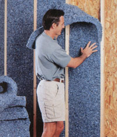

Using the right insulation in your home can improve both yourcomfort and energy efficiency, at the same time reducing yourheating and cooling bills. Insulation slows the movement of heat inand out of the house, keeping you cooler in the summer and warmerduring the cold winter months. Your need for other heating andcooling measures can be significantly minimized, or actuallyeliminated, if the correct insulation is used in conjunction withpassive-solar design and an airtight structure.
Choosing the best type and amount of insulation for your particularhome and climate directly determines its effectiveness. The mostcommon types of insulation to consider are fiberglass, celluloseand rigid foam.
Fiberglass. Among its benefits, it doesn't burn or shrink,bugs don't like it, and it's made from silica sand, a terrificallyabundant resource. However, with potential health risks such aslung damage and cancer warnings, some forms and brands offiberglass are safer than others, so do your research and askquestions to find the best solution for your home.
Cellulose. Economical, readily available and better for theenvironment than fiberglass, cellulose is composed of recyclednewspaper and, occasionally, small quantities of shreddedcardboard. It carries less health risk than fiberglass, but cancondense as it settles and take on moisture, potentially molding ifit stays wet.
Rigid Foam (Foam Board). Mostly made from polymers,water-resistant rigid foam has almost double the R-value (heat flowresistance) of cellulose or fiberglass insulation. Rigid foam isdivided into three types: polyisocyanurate (polyiso), expandedpolystyrene (EPS) and extruded polystyrene (XPS), each varying incost, R-value and environmental friendliness.
Alternative insulation options include straw, straw-bale, wool andcotton. Learn more about these solutions (and those above) in DanChiras' article,'All About Insulation,' fromMotherEarth News magazine.
These tips are adapted from'All About Insulation,' by Dan Chiras.
|
 |
|
|